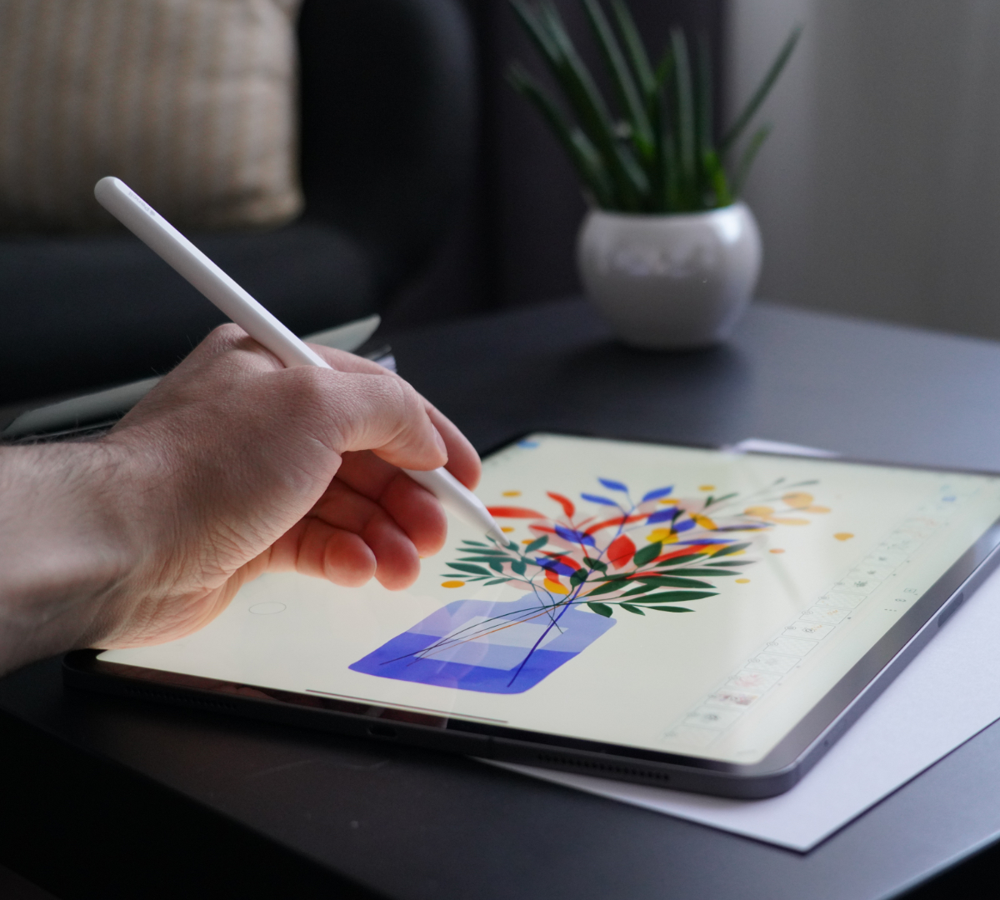
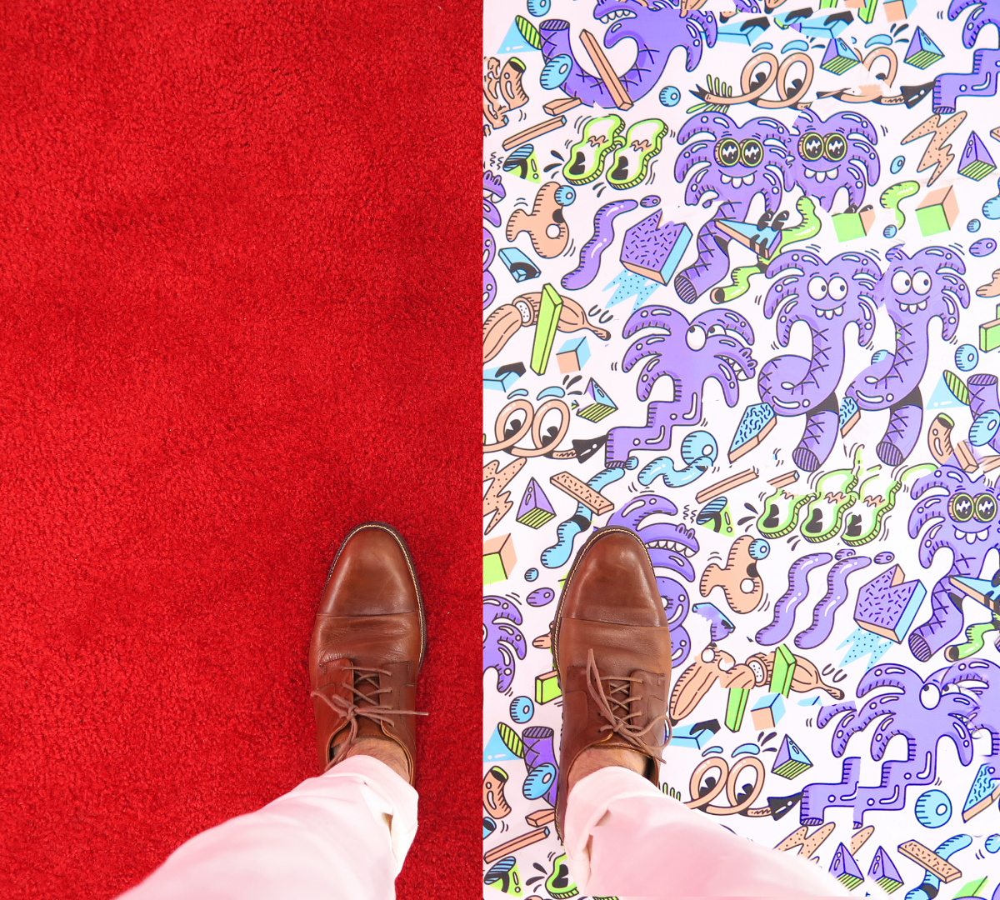
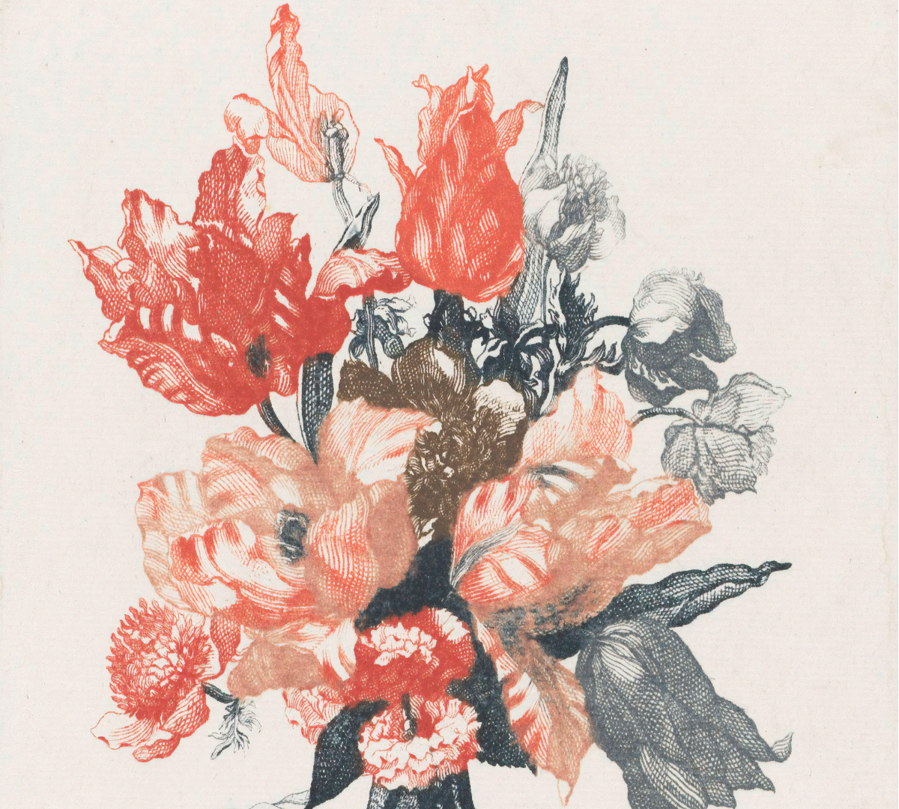

Illustration
Our illustrative work can be found in software applications, books, educational material, posters, postcards and even as part of a clothing brand campaign. Want to try out something different? Just let us know!



